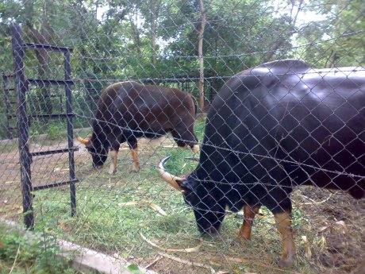
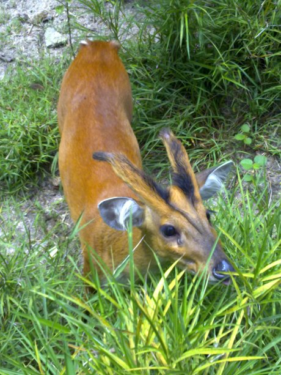

សូមស្វាគមន៍មកកាន់តំបន់ទេសចរណ៍កម្ពុជា
ភ្នំតាម៉ៅភ្នំតាម៉ៅមានទីតាំងស្ថិតនៅភូមិត្រពាំងសាប ឃុំត្រពាំងសាប ស្រុកបាទី ខេត្តតាកែវ មានចំងាយ ៤០គ.ម តាមផ្លូវ ជាតិលេខ ២ពីរាជធានីភ្នំពេញ បត់ស្តាំ ៥គ.ម តាមផ្លូវលំ ដោយប្រើរយះពេលធ្វើដំណើរតាមរថយន្តអស់ ៤៥នាទី។ ភ្នំនេះជារមណីយដ្ឋានចំរុះមានប្រាង្គប្រាសាទ ព្រៃភ្នំ ធម្មជាតិ និងជាសួនសត្វដ៏ធំក្នុងប្រទេសកម្ពុជា។ តំបន់នេះ មានផ្ទៃដី ២៥០០ ហិចតា ដែលគេអោយឈ្មោះថា តំបន់ផ្ទៃដីការពារព្រៃឈើ។ ក្នុងចំនោមផ្ទៃដី ២៥០០ហិចតានេះ ផ្ទៃដីចំនួន ១២០០ហិចតា ត្រូវបាននាយកដ្ឋានរុក្ខាប្រមាញ់ រៀបចំដាំដើមឈើ និងរៀបចំសួនសត្វ ដែលមានផ្ទៃដី ៧០ហិចតា។ ផ្ទៃដី៧០ហិចតានេះរួមមាន ភ្នំចំនួន៥ គឺ ភ្នំតាម៉ៅ ភ្នំថ្មដុះ ភ្នំផ្តៅពន្ធ ភ្នំឆយ និងភ្នំបាំង។ ក្នុងចំណោម ភ្នំទាំង ៥ នេះមានភ្នំពីរ មានប្រាសាទបុរាណ គឺប្រាសាទតាម៉ៅ (ភ្នំតាំម៉ៅ) ប្រាសាទថ្មដុះ (ភ្នំថ្មដុះ) ។
ប្រាសាទតាម៉ៅកសាងនៅក្នុងសតវត្សរ៍ទី ១១ ក្នុងរជ្ជកាលព្រះបាទសូរ្យវរ្ម័នទី ១ និងឧទយាទិត្យាវរ្ម័នទី២ សម្រាប់ ឧទ្ទិសកុសលដល់ព្រហ្មមញ្ញសាសនា។ ប្រាសាទតាម៉ៅ សាងសងអំពី ថ្មស៊ិល្ត និងឥដ្ឋតាន់ក្រហម។ បច្ចុប្បន្ន ប្រាសាទ នេះបាក់បែកស្ទើរតែពុំអាចធ្វើការកត់សម្គាល់បាន។ ប្រាសាទនេះ ស្ថិតនៅកំពូល ភ្នំតាម៉ៅដែល មាន កំពស់ ៣០ ម ជិតព្រះវិហារវត្តភ្នំតាម៉ៅ ។
ប្រាសាទថ្មដុះស្ថិតនៅទិសពាយ័ព្យនៃប្រាសាទភ្នំតាម៉ៅ។ ប្រាសាទថ្មដុះមានទីតាំងនៅលើភ្នំថ្មរដុះដែលមានកំពស់ ៣៥ ម ។ ប្រាសាទថ្មដុះសាងសង់ ក្នុងទស្សវត្យរ៍ទី ១១ អំពីថ្ម ស៊ិល្ត និងឥដ្ឋតាន់ក្រហម សព្វថ្ងៃប្រាសាទនេះ បាក់ បែកអស់មួយភាគធំ។ ប្រាសាទនេះប្រជារាស្ត្រជិត ចូលចិត្តគោរពបូជាជាងប្រាសាទតាម៉ៅ ។
ព័ត៌មានជាតិព័ត៌មានអន្តរជាតិព័ត៌មានកីឡាព័ត៌មានកំសាន្តព័ត៌មានសេដ្ឋកិច្ចជីវិតរស់នៅ និងសុខភាពព័ត៌មានបច្ចេកវិទ្យាទេសចរណ៍រមណីយដ្ឋានកំប្លែង រមណីយដ្ឋានភ្នំតាម៉ៅ ថ្ងៃ ពុធ ទី ២១ ខែ ឧសភា ឆ្នាំ ២០១៤ ម៉ោង ១៦:២៣ ភ្នំតាម៉ៅមានទីតាំងស្ថិតនៅភូមិត្រពាំងសាប
ឃុំត្រពាំងសាប ស្រុកបាទី ខេត្តតាកែវ មានចំងាយ ៤០គ.ម តាមផ្លូវ ជាតិលេខ ២ពីរាជធានីភ្នំពេញ បត់ស្តាំ ៥គ.ម តាមផ្លូវលំ ដោយប្រើរយះពេលធ្វើដំណើរតាមរថយន្តអស់ ៤៥នាទី។ ភ្នំនេះជារមណីយដ្ឋានចំរុះមានប្រាង្គប្រាសាទ ព្រៃភ្នំ ធម្មជាតិ
និងជាសួនសត្វដ៏ធំក្នុងប្រទេសកម្ពុជា។ តំបន់នេះ មានផ្ទៃដី ២៥០០ ហិចតា ដែលគេអោយឈ្មោះថា តំបន់ផ្ទៃដីការពារព្រៃឈើ។ ក្នុងចំនោមផ្ទៃដី ២៥០០ហិចតានេះ ផ្ទៃដីចំនួន ១២០០ហិចតា ត្រូវបាននាយកដ្ឋានរុក្ខាប្រមាញ់ រៀបចំដាំដើមឈើ និងរៀបចំសួនសត្វ
ដែលមានផ្ទៃដី ៧០ហិចតា។ ផ្ទៃដី៧០ហិចតានេះរួមមាន ភ្នំចំនួន៥ គឺ ភ្នំតាម៉ៅ ភ្នំថ្មដុះ ភ្នំផ្តៅពន្ធ ភ្នំឆយ និងភ្នំបាំង។ ក្នុងចំណោម ភ្នំទាំង ៥ នេះមានភ្នំពីរ មានប្រាសាទបុរាណ គឺប្រាសាទតាម៉ៅ (ភ្នំតាំម៉ៅ) ប្រាសាទថ្មដុះ (ភ្នំថ្មដុះ)
។ តាមដងផ្លូវចូលទៅកាន់ភ្នំតាម៉ៅ
 ប្រាសាទតាម៉ៅ(ភ្នំតាម៉ៅ) ប្រាសាទតាម៉ៅកសាងនៅក្នុងសតវត្សរ៍ទី ១១ ក្នុងរជ្ជកាលព្រះបាទសូរ្យវរ្ម័នទី ១ និងឧទយាទិត្យាវរ្ម័នទី២ សម្រាប់
ឧទ្ទិសកុសលដល់ព្រហ្មមញ្ញសាសនា។ ប្រាសាទតាម៉ៅ សាងសងអំពី ថ្មស៊ិល្ត និងឥដ្ឋតាន់ក្រហម។ បច្ចុប្បន្ន ប្រាសាទ នេះបាក់បែកស្ទើរតែពុំអាចធ្វើការកត់សម្គាល់បាន។ ប្រាសាទនេះ ស្ថិតនៅកំពូល ភ្នំតាម៉ៅដែល មាន កំពស់ ៣០ ម ជិតព្រះវិហារវត្តភ្នំតាម៉ៅ
។
 ប្រាសាទថ្មដុះ(ភ្នំថ្មដុះ) ប្រាសាទថ្មដុះស្ថិតនៅទិសពាយ័ព្យនៃប្រាសាទភ្នំតាម៉ៅ។ ប្រាសាទថ្មដុះមានទីតាំងនៅលើភ្នំថ្មរដុះដែលមានកំពស់
៣៥ ម ។ ប្រាសាទថ្មដុះសាងសង់ ក្នុងទស្សវត្យរ៍ទី ១១ អំពីថ្ម ស៊ិល្ត និងឥដ្ឋតាន់ក្រហម សព្វថ្ងៃប្រាសាទនេះ បាក់ បែកអស់មួយភាគធំ។ ប្រាសាទនេះប្រជារាស្ត្រជិត ចូលចិត្តគោរពបូជាជាងប្រាសាទតាម៉ៅ ។ ប្រាសាទទាំងពីរខាងលើបានក្លាយជារមណីយដ្ឋានទេសចរណ៍
គួរជាទីមនោរម្យដល់ភ្ញៀវជាតិ និងអន្តរជាតិ។ ក្រៅ ពីនេះតំបន់ភ្នំតាម៉ៅក៏ជាកន្លែងសួនសត្វមួយយ៉ាងធំ ក្នុងប្រទេសកម្ពុជាយើងដែរ ដែលគ្រប់គ្រងដោយនាយក ដ្ឋាន រុក្ខាប្រមាញ់។ សួនសត្វនេះមានសត្វគ្រប់ប្រភេទចំនួន ៨៤ ដែលពីរប្រភេទត្រូវបាននាំពីបរទេស
ប្រភេទសត្វ ជើង បួន មានចំនួន ៣៨ ប្រភេទ បក្សីមានចំនួន ៣៨ ប្រភេទ ល្មូន ចំនួន៨ ប្រភេទ ។ តំបន់រមណីយដ្ឋានទាំងពីរ ខាង លើបានផ្តល់ឪកាសឲ្យភ្ញៀវទេសចរអាចកំសាន្តជាមួយ សួនសត្វ និងថ្មរភ្នំជាច្រើនដែលដុះនៅតំបន់នោះ ។
ប្រាសាទថ្មដុះ(ភ្នំថ្មដុះ) ប្រាសាទថ្មដុះស្ថិតនៅទិសពាយ័ព្យនៃប្រាសាទភ្នំតាម៉ៅ។ ប្រាសាទថ្មដុះមានទីតាំងនៅលើភ្នំថ្មរដុះដែលមានកំពស់
៣៥ ម ។ ប្រាសាទថ្មដុះសាងសង់ ក្នុងទស្សវត្យរ៍ទី ១១ អំពីថ្ម ស៊ិល្ត និងឥដ្ឋតាន់ក្រហម សព្វថ្ងៃប្រាសាទនេះ បាក់ បែកអស់មួយភាគធំ។ ប្រាសាទនេះប្រជារាស្ត្រជិត ចូលចិត្តគោរពបូជាជាងប្រាសាទតាម៉ៅ ។ ប្រាសាទទាំងពីរខាងលើបានក្លាយជារមណីយដ្ឋានទេសចរណ៍
គួរជាទីមនោរម្យដល់ភ្ញៀវជាតិ និងអន្តរជាតិ។ ក្រៅ ពីនេះតំបន់ភ្នំតាម៉ៅក៏ជាកន្លែងសួនសត្វមួយយ៉ាងធំ ក្នុងប្រទេសកម្ពុជាយើងដែរ ដែលគ្រប់គ្រងដោយនាយក ដ្ឋាន រុក្ខាប្រមាញ់។ សួនសត្វនេះមានសត្វគ្រប់ប្រភេទចំនួន ៨៤ ដែលពីរប្រភេទត្រូវបាននាំពីបរទេស
ប្រភេទសត្វ ជើង បួន មានចំនួន ៣៨ ប្រភេទ បក្សីមានចំនួន ៣៨ ប្រភេទ ល្មូន ចំនួន៨ ប្រភេទ ។ តំបន់រមណីយដ្ឋានទាំងពីរ ខាង លើបានផ្តល់ឪកាសឲ្យភ្ញៀវទេសចរអាចកំសាន្តជាមួយ សួនសត្វ និងថ្មរភ្នំជាច្រើនដែលដុះនៅតំបន់នោះ ។

© រក្សាសិទ្ធិគ្រប់យ៉ាងដោយ Visit Cambodia tours ឆ្នាំ២០១៨
អាសយដ្ឋាន
អគារលេខ ៣០៨ មហាវិថីព្រះមុន្នីវង្ស
សង្កាត់បឹងរាំង ខណ្ឌដូនពេញ
Visit Cambodia tours ជាគេហទំព័រ សម្រាប់ធ្វើការស្វែងរកកន្លែងកម្សាន្ត និង បញ្ជាក់បន្ថែមនៅពត័មានរបស់ខេត្ត។
.jpg)